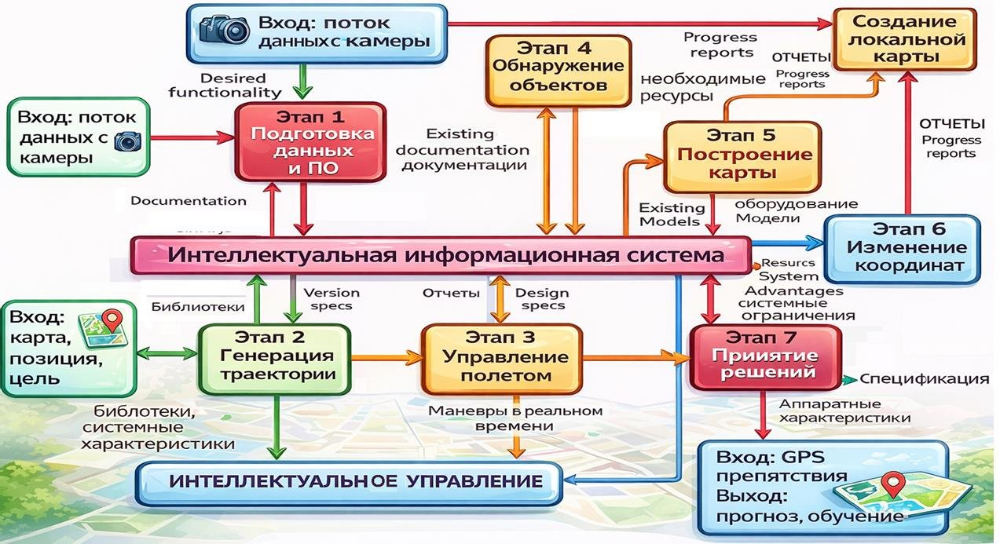

Проектирование интеллектуальных систем управления
Веб-приложение описывает работу интеллектуальной системы управления БПЛА в виде 7 этапов. Нажимайте кнопки — каждая ведёт на страницу этапа.

Этапы системы
Этап 1Подготовка данных и программное обеспечениеЭтап 2Генерация траекторииЭтап 3Управление полётомЭтап 4Обнаружение объектовЭтап 5Создание картыЭтап 6Изменение координатЭтап 7Принятие решений
★ Итоги: NDVI, карта, прогноз, тесты
Входные данные
- Датасет — размеченные изображения и измерения для обучения и проверки моделей (например, снимки полей с метками объектов или мультиспектральные кадры NIR/Red). Применяется для обучения YOLOv8 и CNN–LSTM; важно разделять данные на обучающую и проверочную части.
- Поток данных с камеры — кадры в реальном времени; требуют фильтрации шума и нормализации (этап 1).
- Карта, положение, цель — область полёта, текущая позиция дрона и точка назначения; нужны для построения траектории (этап 2).
- Данные GPS — широта и долгота; содержат ошибки, корректируются фильтром и переводятся в локальные метры (этапы 1 и 6).
Методы искусственного интеллекта
| Класс методов | Алгоритм | Назначение | Где показано |
|---|---|---|---|
| Машинное обучение (ML) | Линейная/полиномиальная регрессия, SVM | Прогнозирование параметров и трендов | Итоги, п. 3 |
| Глубокое обучение (DL) | CNN–LSTM | Анализ временных рядов, прогноз природных процессов | Итоги, п. 4; этап 7 |
| Деревья решений | Decision Tree, Random Forest, XGBoost | Классификация данных ДЗЗ и ГИС, выбор оптимальных параметров | Итоги, п. 1 (порог NDVI) |
| Нечёткая логика (Fuzzy Logic) | Нечёткие правила, система Мамдани | Оценка неопределённости, моделирование экспертных решений | Этап 7 |
| Гибридные подходы (AI + EKF) | CNN–LSTM + расширенный фильтр Калмана | Повышение устойчивости и точности моделей | Этапы 1, 7 |
Выполнил(а): ФИО студента, группа XX-XX